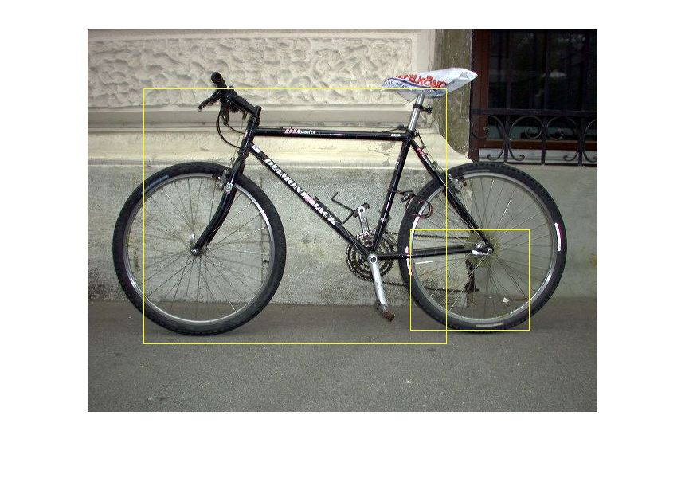

Contents
% Name: testing.m % type: object recogination % description: open the file in mat lab asnd run the script it will start % takimng the images from the web cam and extract the object from the image % s of the video and display the object name in a pop up window. % contact-us: https://learn-kevin.blogspot.com % ========================================================================= % Object Recogination Testing % ========================================================================= % clearing clc close all clear all % adding paths of xml files and input images addpath('inputSet'); addpath('XML Files'); % initilising the webcam vid = videoinput('winvideo',1,'YUY2_320x240'); % set the farme rate of video from webcam % set(vid,'FramePerTrigger',Inf); % set the camera color formate set(vid,'ReturnedColorspace','rgb'); % set the frame interval vid.FrameGrabinterval = 5; % start the webcam start(vid); % preview(vid); % load the xml files of object those to detect detector1 = vision.CascadeObjectDetector('bikedetector_9_100.xml'); % detector2 = vision.CascadeObjectDetector('laptopdetector_5_5.xml'); % detector3 = vision.CascadeObjectDetector('ACdetector_5_5.xml'); % detector4 = vision.CascadeObjectDetector('pendetector_5_5.xml'); % detector5 = vision.CascadeObjectDetector('tabledetector_5_5.xml');
deltect the object from the input images
load the input image from input set
img = imread('inputSet\v4.jpg'); % detect the image from the image using detector bbox = step(detector1,img); % inset the detected boundary in to the image J = insertShape(img,'rectangle',bbox); % display the detected region over the input image imshow(J)
detect the image from the web cam images
counter
i = 0; % main loop % while( i <3) % % taking a snapshot of from the video and storeing it in the image % % variable % image = getsnapshot(vid); % % converting the image in to gary scale % image = rgb2gray(image); % % figure; % % display the grayscale image to wthe window % % imshow(image); % % %% Extract HOG Features % % [hog16, vis16] = extractHOGFeatures(image,'CellSize',[16 16]); % % figure; % % imshow(image); % % hold on; % % plot(vis16); % % init the bounding box around the object % bbox = step(detector1,image); % %% Mark the location on the image using a bounding box % J = insertShape(image,'rectangle',bbox); % imshow(J) % % % % increase the counter % i = i + 1; % % end
cleaning the detector
release(detector1); % release(detector2); % release(detector3); % release(detector4); % release(detector5);
stop the video
stop(vid)
flushdata(vid);
clear all